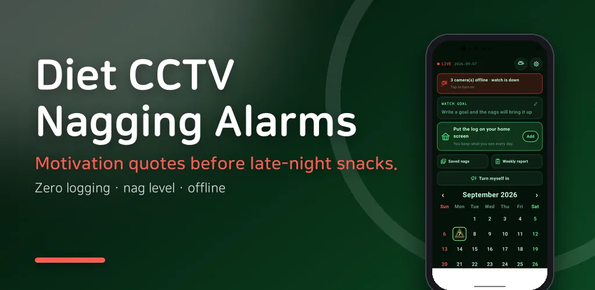
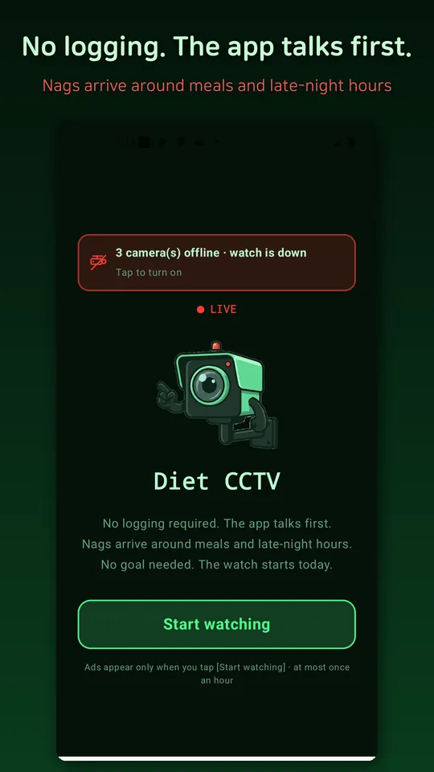
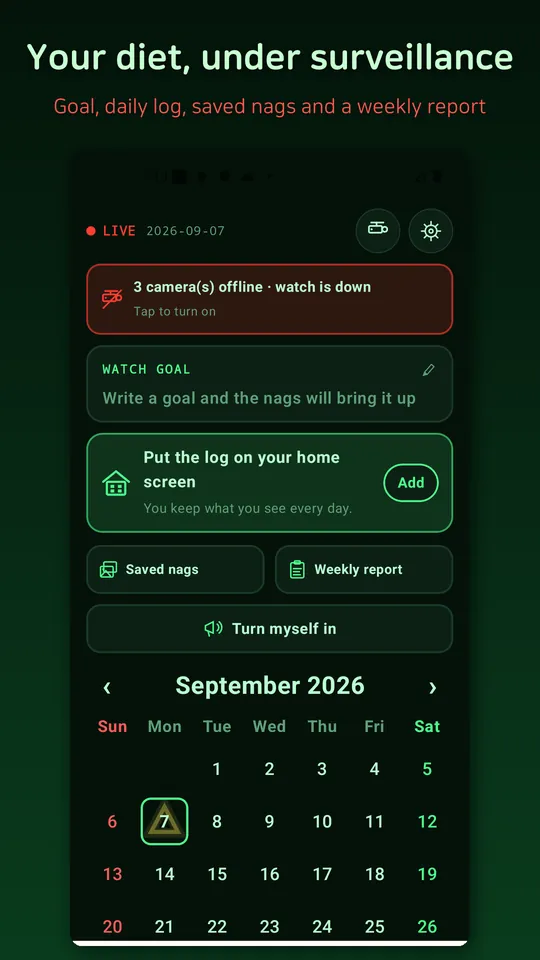
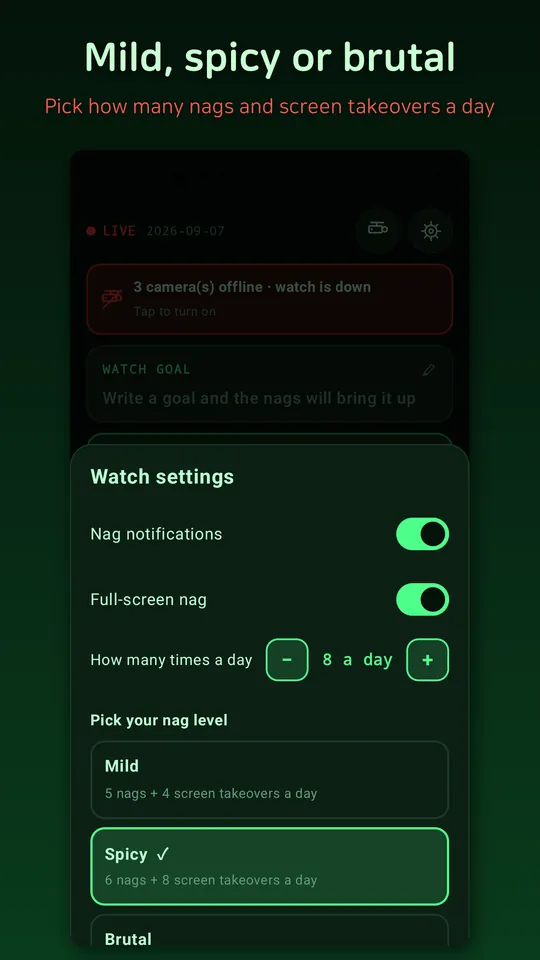
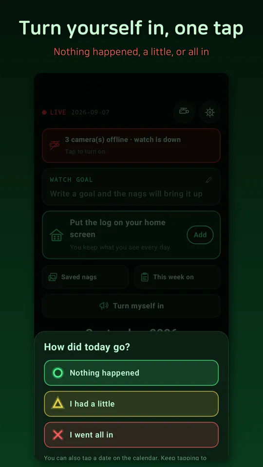

Diet Motivation - Diet CCTV
Nagging alarms before late night snacks. Diet motivation quotes, zero logging





About this app
A CCTV control room watches your table.
Not another diet tracker that makes you log everything — this app talks to you first.
■ Zero input required
No calorie counting, no weight logging, no meal photos. From the day you tap Start Watching, nagging notifications arrive 5 to 7 times a day, timed to your meals and late-night snack hours. Even if your motivation lasts three days, that is fine. You do not open the app — the app comes to you.
■ Pick your watcher
A sly security guard, a deadpan AI monitor, a nagging mom, or a tough-love trainer. Four watchers, four completely different voices. Hundreds of nag lines arrive matched to the time of day, your intensity setting, and your weak-spot foods — and recent lines never repeat.
■ Late-night watch
At 10:30 pm, right before you open a delivery app, the notification gets there first. Pick your weak-spot foods (late-night snacks, fried chicken, instant noodles, bread and desserts, alcohol, delivery, sugary drinks) and the nags call them out by name.
■ Three intensity levels
Mild (5 nags + 4 full-screen takeovers a day), spicy (6 + 8), inferno (7 + 12). You can adjust the takeover count separately, and lower or turn off either one anytime.
■ A nag that covers your whole screen
If notifications are not enough, turn on full-screen watch. At set times, a nag takes over the entire screen. Stronger than a motivational wallpaper — wallpapers fade into the background in three days, but this screen returns with a different line every time.
■ Diet motivation quote locker
Collect every line you have received, save your favorites as CCTV-style motivation wallpapers, set them as your phone background, or share them with friends.
■ The watch log
A calendar with just three stamps: clear, minor, caught. Ate something? One tap on the "I confess" button. It is a funny record, not a guilt trip.
■ Weekly CCTV report
"3 caught incidents this week, 2 late-night snacks." Get a deadpan control-room report card every week and share it.
■ 100% offline
Everything stays on your phone. Nothing is sent to any server. No accounts, no sign-up.
About ads: there is a banner at the bottom, and a full-screen ad may appear when you tap Start Watching (at most once an hour). The full-screen nag itself never shows ads.
This app is for fun and motivation only. It does not provide medical advice or weight-loss results. For healthy eating and weight management, consult a professional.
Android · free with ads · Developer: RealTunaLove · Store listing in 17 languages
Background story: why I built it